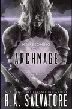

Archmage
Écrit par R. A. Salvatore, publié en Septembre 2015.
AVERTISSEMENT
Cette page révèle certaines informations qui pourraient gâcher la lecture du roman. Si vous pensez lire ce livre dans un futur proche, mieux vaut ne pas parcourir ce résumé !
Le seigneur de guerre orc Hartusk mort, c'est l'un des fils d'Obould, Lorgru, qui négocie la paix avec les anciens membres de l'alliance de Luruar, qui unissait avant ce conflit nains, elfes et humains dans les Marches d'Argent. Puis Bruenor annonce qu'il va marcher avec 4000 soldats nains sur Gauntlgrym afin de reprendre la célèbre forge aux drows. Amber et Athrogate, pour le compte de la compagnie de mercenaires Bregan D'aerthe, l'accompagneront, alors que le moine Afafrenfere retourne vers Procampur et que Regis et Wulfgar partent pour Aglarond, où le halfelin veut se retrouver avec sa bien aimée Donnola Topolino. Afin de pouvoir accompagner Bruenor, le roi Connerad de Castelmithral cède son trône à la naine Dagnabbet, et le roi Emerus Warcrown fait de même en cédant celui de Felbarr à Parson Glaive. Nous sommes maintenant en 1486. La troupe passera par Mirabar, où elle se renforce de 1000 soldats supplémentaires après négociations, puis par Longueselle, le siège des magiciens Harpells, où Cattie-Brie se voit offrir un bâton magique. Drizzt apprendra par ailleurs que les nains du Valbise ont été vaincu par les drows durant la guerre passée. Penelope et d'autres magiciens Harpells se joignent alors à la troupe qui passe ensuite à travers les Crags pour arriver à Neverwinter, dont le dirigeant, Dagult Neverember, ne voit pas d'un bon œil l'arrivé d'une armée naine sur ses terres.
À Menzoberranzan, la matrone Quenthel Baenre invoque des démons afin de terrifier et d'occuper ses rivales, suivant en cela une vision qu'elle a eu. Le psionique Kimmuriel, qui a un vieux compte à régler avec la maison Baenre, se laisse de son côté convaincre par un émissaire de Lolth qu'il devrait pousser Gromph, le frère de Quenthel, à faire de même, mais pour en fait lui faire invoquer à son insu K'yorl Odran, ancienne matrone de la maison Oblodra et mère de Kimmuriel, supposément emprisonnée par un balor dans un plan inférieur. En réalité la déesse cherche, avec l'aide du balor Errtu, à créer le chaos dans la cité des drows et à se retrouver libre dans les Abysses. Quelques temps plus tard, Kimmuriel se retrouve à Luskan avec Gromph et Jarlaxle, et l'archimage ordonne à ce dernier de retrouver Tiago, qu'il pense être encore vivant après avoir eu une courte discussion avec le dragon blanc Arauthator. Puis Kimmuriel, grâce à ses pouvoirs psioniques, commence à enseigner à Gromph les premiers mots d'un puissant sort d'invocation, alors que les guerriers de certaines maisons drows commencent à affronter les démons, des centaines, au cœur de la cité. C'est d'ailleurs le fait que les démons commencent à attaquer des drows qui pousse l'archimage à invoquer ses premières créatures, des chasmes, puis Marilith elle-même, dans l'idée de combattre les démons de Quenthel avec d'autres démons.
Diago, qui est effectivement encore vivant et accompagné de Doum'wielle et de son épée Khazid'hea, retrouve la trace de Drizzt et suit la troupe des nains, attendant le moment opportun pour affronter son ennemi de toujours. Un mercenaire de Bregan D'aerthe se présente alors devant Doum'wielle et lui demande de porter un médaillon qui permettra à Gromph de les localiser à tout moment, mais Diago ne doit pas être au courant. Et ce que personne ne sait est que ce même médaillon permet également à Kimmuriel, qui continue d'enseigner la magie psionique à l'archimage drow, de surveiller Gromph. Les nains rentrent alors dans Gauntlgrym, avançant méthodiquement, salle par salle. Gromph en avertit sa sœur, se demandant comment celle-ci va s'en sortir vu qu'il est impossible d'envoyer des soldats contre Bruenor, le meurtrier de leur mère, avec le chaos que les démons sèment à Menzoberranzan. Mais celle-ci a un plan : envoyer des démons, encore plus puissants que ceux-ci, à Q'Xorlarrin, contre les nains. Le magicien se dit alors que s'il parvient à en prendre le contrôle, il pourrait porter un coup fatal à la matrone. Pendant ce temps Tiago affronte des kobolds dans les couloirs de Gauntlgrym... tout comme les nains... puis se retrouve enfin face à Drizzt alors que Doum'wielle enferme Guenhwyvar, la panthère du rôdeur elfe noir, dans une salle. Le duel tant attendu commence, la lame empoisonnée de Tiago pénètre la chair de Drizzt, mais celui-ci parvient à résister. Finalement, Doum'wielle intervient et frappe, sur Tiago en première instance, puis sur Drizzt, selon le plan imaginé par Khazid'hea : Doum'wielle gagnera sa rédemption en ramenant elle-même la tête de Drizzt à Menzoberranzan. Mais à ce moment Gromph fait venir Tiago et Doum'wielle à lui, prend l'épée de celle-ci pour l'offrir à Jarlaxle, et envoie la demi-drow sur un mont enneigé de l'Épine dorsale du Monde.
Dans la cité drow, des maisons nobles menées par Mez'Barris s'unissent temporairement et tentent de profiter du chaos pour éliminer Dahlia, l'elfe matrone de la maison Do'Urden placée par Quenthel, mais la tentative échoue. La mère matrone décide alors d'exécuter son plan et envoie son armée de démons à Q'Xorlarrin, où Marilith se présente à Zeerith Xorlarrin, et de nombreuses batailles s'en suivent. Au cours de l'une d'elles, la bataille des Voies inférieures, le roi Connerad, malgré le support de quatre magiciens Harpells, y perdra la vie, ainsi que plus de cent guerriers. Oretheo s'illustrera dans une autre, la bataille de la Caverne, autour d'un étang, mettant en déroute une armée de chasmes, vrocks et un glabrezu, au prix toutefois de trois cent nains. Ailleurs dans le complexe, Bruenor et ses compagnons retrouvent Guenhwyvar, puis Drizzt, avec une sorte de bandage mais très mal en point. Cattie-Brie pour sa part met à jour dans une pièce secrète ce qui semble être un ancien portail, et tous devront également affronter leur lot de démons, dont un behemoth. Cet épisode restera connu dans la mémoire des nains comme la bataille des Mines.
Les nains ont soif de vengeance, et montent une grande opération pour en finir avec les drows. Bardés de protections magiques, ils passent par un portail également magique pour accéder aux niveaux inférieurs, et illuminent les cavernes par des moyens... magiques, lumière brutale pour les drows. Mais une nouvelle fois, ce ne sont pas des elfes noirs qu'ils vont affronter, sinon des démons, menés par Marilith et Nalfeshnee. Le combat fait rage, le roi nain Emerus sera d'ailleurs mortellement blessé, et la situation devient plus que préoccupante quand surgit Drizzt, qui a été remit sur pied par Jarlaxle, accompagné de sa panthère. L'habilité du rôdeur fait la différence, et au final Drizzt défait Marilith au moment où Guenhwyvar fait de même avec Nalfeshnee, avec l'aide de Cattie-Brie, et sous le regard de Jarlaxle et Kimmuriel. Puis, alors que Jarlaxle finit de convaincre la matrone Zeerith de se rendre en promettant de ne pas revenir à Gauntlgrym pendant au moins cent ans, ceci dans le but de protéger la fuite de sa maison qui finalement a été peu touchée jusque là, le psionique termine l'apprentissage du sort à Gromph. Et vient le moment pour l'archimage de lancer son ultime sortilège. Mais, alors qu'il s'attend à invoquer un balor, c'est en fait le Prince des démons, Demogorgon, qui apparaît, à sa plus grande stupéfaction, ainsi qu'à celle de Kimmuriel.
Gromph s'échappe alors vers Q'Xorlarrin et, se retrouvant face à Drizzt, Catti-Brie, Bruenor et Jarlaxle, demande à ceux-ci de l'aider à détruire le portail magique qui l'a amené jusque là, afin que le démon ne puisse le suivre. Puis le leader nain peut enfin diriger une cérémonie posthume où Connerad, Emerus et lui-même sont respectivement nommés premier, deuxième et troisième et actuel roi de Gauntlgrym. Cattie-Brie annonce alors son intention d'aller s'installer à Longueselle chez les Harpells, et Bruenor la sienne qui est de ne plus reprendre la route et de rester ici, dans son nouveau royaume. De son côté, Lolth ne cache pas son contentement. Gromph ayant ouvert la brèche, ses rivaux sont sur le point de la laisser libre...